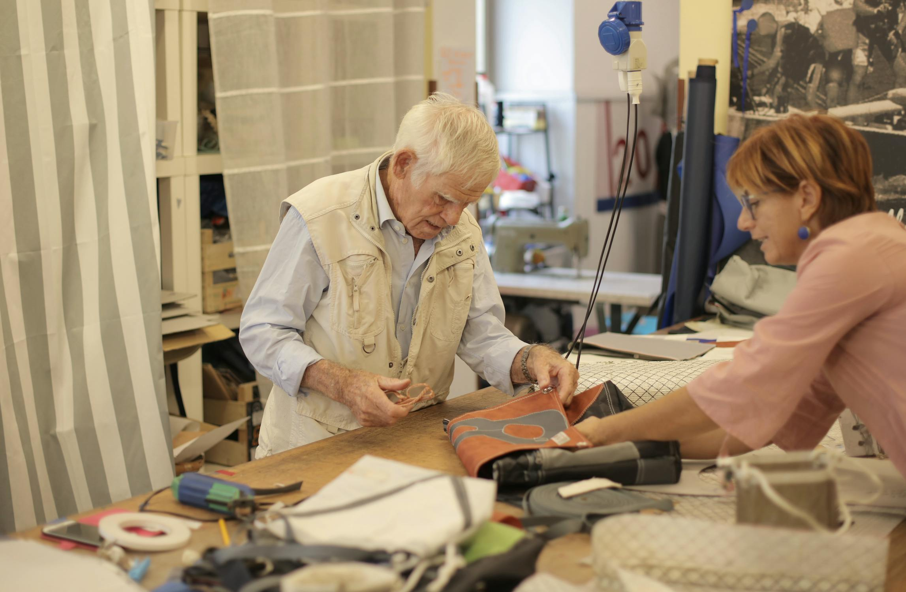
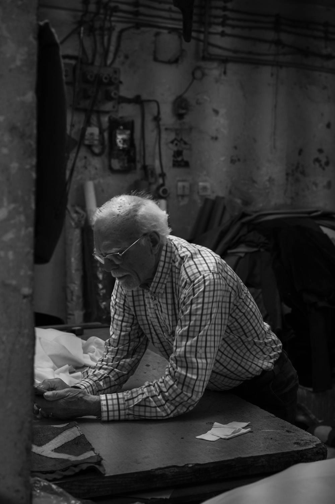
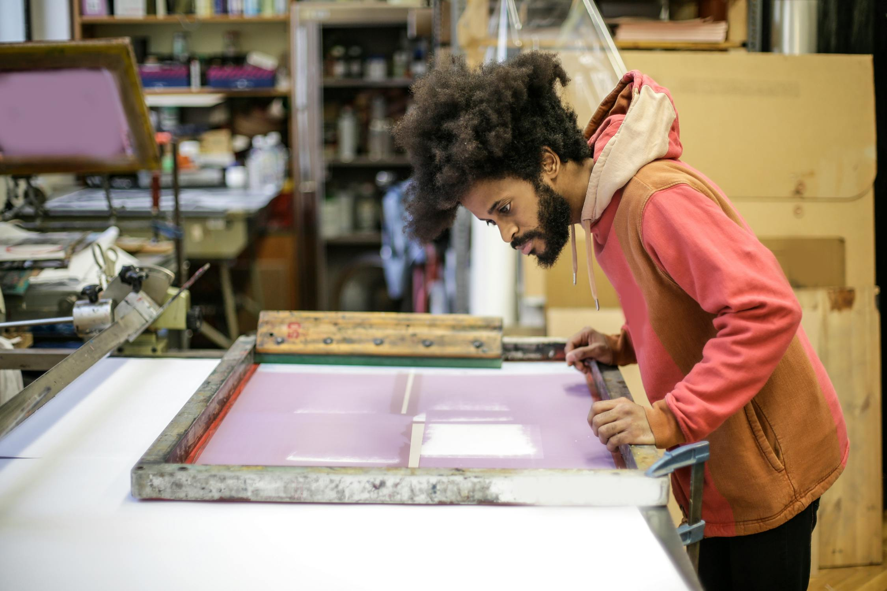

Si eres artesano y llevas años pensando "ya llegará alguien que quiera aprender esto", tengo una mala noticia: probablemente no llegará. No porque tu oficio no valga la pena, sino porque las condiciones para que alguien entre, aprenda y pueda vivir de ello siguen sin existir en la mayoría de los talleres.
Y si eres alguien que se plantea entrar en un oficio artesanal, seguramente te has topado con la misma barrera: mucha vocación, poca estructura. Talleres que necesitan gente pero no saben cómo acogerla. Oficios que te apasionan pero que no ofrecen un camino claro para ganarte la vida.
Aquí no vamos a hablar de nostalgia. Vamos a hablar de lo que funciona: 5 palancas concretas, con datos, casos reales y un plan de acción de 30 días para que el relevo generacional en artesanía deje de ser una aspiración y se convierta en una estrategia.
Para quién es esto: artesanos que piensan en su continuidad, marcas artesanas que necesitan estructurar la transmisión del saber hacer, y cualquier persona que se plantee entrar en un oficio. Si te importa que estos oficios sigan vivos, este artículo es para ti.

El relevo generacional empieza con un maestro que decide abrir la puerta de su taller
El contexto: por qué el relevo generacional en artesanía es urgente
Antes de hablar de soluciones, miremos los números. Porque la urgencia no es retórica: es matemática.
Aquí está la paradoja: un sector que crece al 2,8% anual pero envejece sin reemplazo. Más del 60% de los artesanos tiene más de 50 años. El 68% de los oficios artesanales está en riesgo de desaparición, según la Consejería de Empleo de Andalucía. Y España perderá 3,5 millones de trabajadores jóvenes en la próxima década: habrá solo 1 joven por cada 3 profesionales que se jubilen.
Compara con Francia, que tiene más de 120.000 empresas artesanas frente a nuestras 64.000. Casi el doble. No es que en Francia haya más talento manual: es que tienen un ecosistema más estructurado para que los oficios se transmitan y se profesionalicen.
Los oficios no se salvan con nostalgia. Se salvan con modelos que funcionen hoy.
En el sector agroalimentario artesanal, la edad media de los socios cooperativistas es de 62 años y solo el 4% de los jóvenes dirige explotaciones. En Italia, distrito cerámico centenario como Nove ha visto cerrar talleres masivamente tras la crisis de 2008. En Reino Unido, oficios como el tejido de lino, el plisado y la botonería están al borde de la extinción.
No es un problema español: es un problema europeo. Pero eso no lo hace menos urgente. Lo hace más accionable, porque hay modelos y programas de los que aprender.
5 palancas reales para activar el relevo generacional
No hay una solución mágica. Pero hay palancas que, combinadas, cambian las probabilidades. Cada una aborda un freno real del relevo y viene con datos, ejemplos y acciones concretas.
El problema: entrar en un oficio artesanal sigue pareciendo una apuesta demasiado frágil. Formarse durante años sin remuneración, sin estructura ni garantías, es un lujo que muy poca gente se puede permitir. Y no es que falte interés: es que las condiciones de entrada son expulsivas.
La buena noticia es que ya existen programas públicos que hacen esto viable:
- Extremadura ofrece ayudas de hasta 30.000 € en 3 años para el relevo generacional (12.000 + 10.000 + 8.000 €), con una inversión total de 300.000 € en el programa.
- Galicia (Xunta) tiene el programa IN201K: formación remunerada de aprendices directamente en taller, entre 6 y 12 meses, de 20 a 40 horas semanales. Además, 6 cursos especializados en oficios como orfebrería, tapicería, tejido, marroquinería, costura y tornería.
- Andalucía ha puesto en marcha un Plan de Relevo Generacional específico para la artesanía andaluza.
Si eres artesano: no esperes a que el aprendiz venga y acepte tus condiciones. Investiga las ayudas de tu comunidad autónoma, contacta con tu gremio y diseña un programa de acogida con condiciones reales: horario, remuneración, progresión y objetivos claros.
Si eres marca artesana: crea un plan de incorporación gradual. Un perfil junior que entre con funciones definidas, mentorización y revisión trimestral. Eso no es un coste: es una inversión en la continuidad de tu proyecto.
El problema: la técnica importa, pero hoy no basta con dominar el oficio. Un artesano que sale al mercado necesita saber de gestión, comunicación, canal digital y posicionamiento. Y la formación artesanal tradicional rara vez incluye estas competencias.
Las Escuelas Taller de Patrimonio Nacional han formado a más de 5.000 personas en 20 oficios histórico-artísticos (cantería, tapicería, relojería, dorado, guarnicionería, encuadernación, sastrería histórica...) con un modelo de "aprender trabajando" directamente en patrimonio real. Es un modelo probado que demuestra que la formación en oficio funciona cuando es estructurada y práctica.
La Cátedra de Innovación en Artesanía, Diseño y Arte Contemporáneo de la Universidad de Granada va un paso más allá: conecta artesanía con diseño, gestión e innovación. Porque el relevo no es solo técnico: es empresarial.
Si eres artesano: piensa en qué competencias necesita tu sucesor además de la técnica. Gestión básica, presencia digital, comunicación de producto, comprensión del mercado. No hace falta que las enseñes tú: identifica formaciones complementarias y facilita el acceso.
Si eres marca artesana: documenta tu saber hacer ahora. Protocolos de proceso, fichas técnicas, registro de proveedores, lógica de decisiones. Todo lo que llevas en la cabeza y que se pierde cuando tú no estás. No esperes al relevo para documentar: documenta para que el relevo sea posible.

Dominar la técnica es solo el principio: el relevo necesita también gestión, comunicación y visión de negocio
El problema: si aprender un oficio implica sacrificio total, sin ingresos estables ni perspectiva económica clara, el relevo no llega. La vocación sola no paga el alquiler. Y ofrecer condiciones que solo alguien sin alternativa aceptaría no es un modelo de transmisión: es un modelo de extinción.
Escobas Mendi (País Vasco) es un ejemplo de lo contrario. Un negocio familiar de 4.ª generación que fabrica escobas artesanales de mijo. Han logrado continuidad porque encontraron un canal digital que amplía su mercado: venden internacionalmente a través de comercio electrónico. La técnica es la misma de siempre; el modelo de negocio se actualizó.
Si eres artesano: haz las cuentas. ¿Puede tu taller sostener a dos personas? Si no, el relevo es una fantasía. Antes de buscar sucesor, trabaja en la viabilidad: revisa precios, canales de venta, eficiencia de producción. Un taller que no da para vivir no tiene relevo posible.
Si eres marca artesana: haz atractiva la propuesta. Condiciones laborales dignas, progresión clara, participación en decisiones. La persona que va a continuar tu proyecto necesita sentirlo también como suyo.
El problema: muchos artesanos ven la innovación como una amenaza a la tradición. Y muchos jóvenes ven la tradición como un freno a la innovación. Las dos perspectivas están equivocadas. Innovar no es traicionar el oficio: es darle una forma habitable para el presente.
El caso de Nove, Italia, es revelador. Este distrito cerámico centenario sufrió un cierre masivo de talleres tras la crisis de 2008. Los que sobrevivieron no fueron los que hicieron las cosas "como siempre". Fueron los que combinaron la técnica tradicional con innovación en producto, diseño y canales de venta. La tradición fue su base; la innovación, su oxígeno.
Como señala la Fundación Europea de Formación (ETF): "La innovación de hoy es el saber hacer de ayer". No se trata de abandonar lo que sabes, sino de encontrar nuevas aplicaciones para tu conocimiento.
Tres formas de innovar sin perder la esencia:
1. Nuevos formatos: la misma técnica aplicada a piezas diferentes. Un tornero que hace piezas de menaje puede hacer componentes de interiorismo.
2. Nuevos canales: tu pieza es la misma, pero llega a mercados que antes no alcanzabas. Comercio electrónico, colaboraciones con diseñadores, prescriptores de arquitectura.
3. Nuevas aplicaciones: tu saber hacer resuelve un problema actual. Técnicas de cerámica aplicadas a revestimiento sostenible. Tejido artesanal como material acústico. Circularidad como propuesta de valor.

La nueva generación de artesanos combina técnica tradicional con herramientas y canales actuales
El problema: la mayoría de los artesanos espera a que "aparezca alguien". Pero el relevo no es un golpe de suerte: es un proceso que se planifica, se estructura y se ejecuta. Los talleres que logran transmisión son los que la tratan como parte de su estrategia de negocio, no como algo que ya llegará.
El Proyecto Relevo Rural demuestra que el relevo funciona mejor cuando se estructura. Cuatro organizaciones (Ruralízate, Rural Bridge, Rural Citizen y Cabras en Red) facilitan el relevo generacional usando la economía circular como palanca de modernización en Extremadura, Andalucía y Castilla-La Mancha. El programa ofrece más de 60 horas de formación online y una inmersión de 1 mes en territorio, financiado por el FSE+ y Empleaverde+.
No conectan a personas con talleres al azar: analizan el perfil del negocio, preparan al sucesor y acompañan la transición. Eso es diseñar el relevo.
Checklist de preparación para el relevo
Casos reales: así se activa el relevo en España
Negocio familiar de escobas artesanales de mijo que ha logrado continuidad generacional gracias al comercio electrónico. La técnica es la de siempre; el canal de venta se actualizó.
Modelo "aprender trabajando" directamente en patrimonio real. Cantería, tapicería, relojería, dorado, guarnicionería, encuadernación, sastrería histórica...
Cuatro organizaciones conectan desempleados con negocios rurales que necesitan relevo, usando la economía circular como palanca de modernización.
5 errores que dificultan el relevo generacional
Hoja de ruta: 30 días para poner en marcha el relevo
No necesitas tenerlo todo resuelto. Necesitas empezar. Este plan te da un camino claro para las próximas cuatro semanas.
Al final de estas cuatro semanas tendrás algo que hoy no tienes: un punto de partida real. No un plan perfecto, sino la información y los contactos para tomar la siguiente decisión con criterio.
Programas y ayudas que deberías conocer
No estás solo en esto. Hay recursos públicos y programas específicos para facilitar el relevo generacional en artesanía. Aquí tienes un resumen:
| Programa | Territorio | Qué ofrece |
|---|---|---|
| Ayudas al Relevo Generacional | Extremadura | Hasta 30.000 € en 3 años (12.000 + 10.000 + 8.000 €) |
| Programa IN201K | Galicia | Formación remunerada de aprendices en taller (6-12 meses, 20-40h/semana) |
| Escuelas Taller | Patrimonio Nacional | Formación en 20 oficios histórico-artísticos. +5.000 personas formadas |
| Proyecto Relevo Rural | Extremadura, Andalucía, CLM | 60+ horas formación + 1 mes inmersión. Financiado FSE+/Empleaverde+ |
| Líneas Estratégicas 2026 | Comunitat Valenciana | Centre d'Artesania: artesanía como sector estratégico |
| Plan de Relevo Generacional | Andalucía | Plan específico para artesanía andaluza |
| Cátedra de Innovación | Universidad de Granada | Artesanía + diseño + gestión + arte contemporáneo |
Preguntas frecuentes
Conclusión
El relevo generacional en artesanía no se improvisa. Se diseña. Y no se trata solo de conservar técnicas para un museo: se trata de crear las condiciones para que alguien quiera aprenderlas, pueda vivir de ellas y elija continuarlas.
Los datos son claros: el sector crece, pero envejece. Los programas existen, pero están infrautilizados. Los jóvenes con interés en los oficios están ahí, pero necesitan un camino que no sea heroico.
Las 5 palancas no son teoría. Son lo que ya está funcionando en talleres y programas reales. El paso que falta es el tuyo.